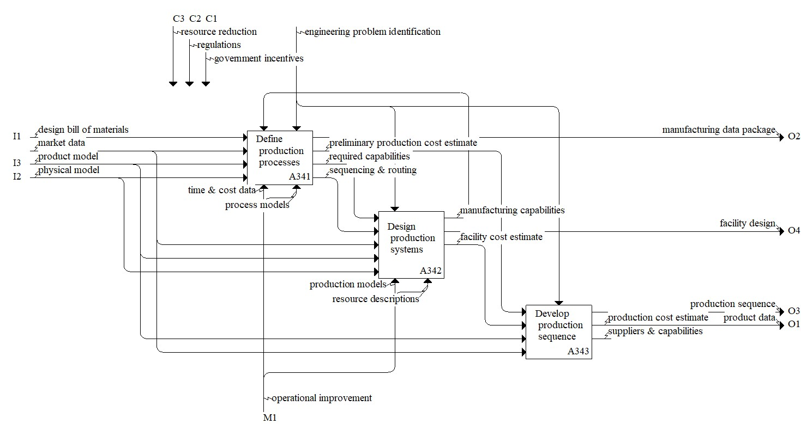

Description
The model decomposition for preparing the product design for production involves defining the product processes, designing the production systems, and finally developing the production sequence. In a circular economy, preparing the product design for production may be influenced by considering processes that reduce the amount of energy and material wasted or enable alternate uses for these secondary outputs.Parent Activity: Prepare product design for production